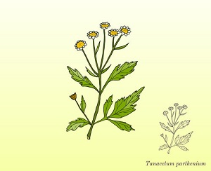

TYPES OF PLANTS | HOME |
ABOUT |
TYPES OF PLANTS |
FLOWERING PLANTSFlowering plants are the beautiful part of the nature which can feed insects,birds and animals They are the source of honey and also provides source for perfumes and scents. Ex:-Hibiscus,Sunflower |
|
ROOT PLANTSRoot Plants are great absorbers of water and inorganic nutrients it is a big storage unit of food and nutrients The roots anchor the plant in place resisting the forces of wind and running water on mud flow. Ex:-Carrot,Betroot |
|
LEAFY PLANTSLeafy Green Vegetables are an important part of a healthy diet they are packed with vitamins,minerals and fiber. Eating a diet rich in leafy greens can offer numerous health benefits like reducing obesity, heart diseases , high blood preesure and mental decline. Ex:-Spinach,Coriander |
|
|  | MEDICINAL PLANTSMedicinal PLants such as Aloevera,Tulsi,Neem and Ginger cure several common ailments these are considered as home remedies in many pats of the country. These plants play a major role in the science of Ayurveda. Ex:-Lavender,Celery |
ORNAMENTAL PLANTSOrnamental Plants are the plants that grow for decorative purposes in gardens and landscapes and also as house plants. These plants helps to reduce the air pollution and provides us fresh air. Ex:-Money Plant,Daffodils Beside Attached Picture is my own plant ⮕ |
|
"WITHOUT ME THERE IS NO WORLD" |